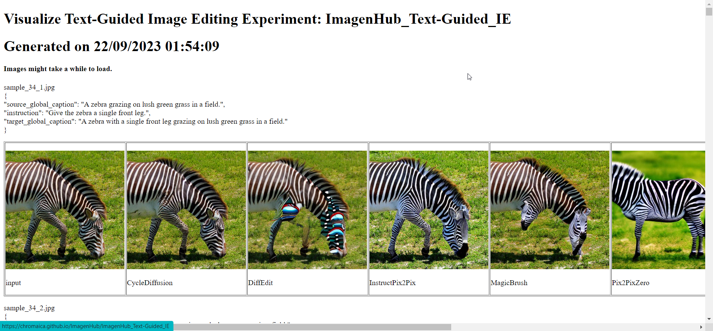
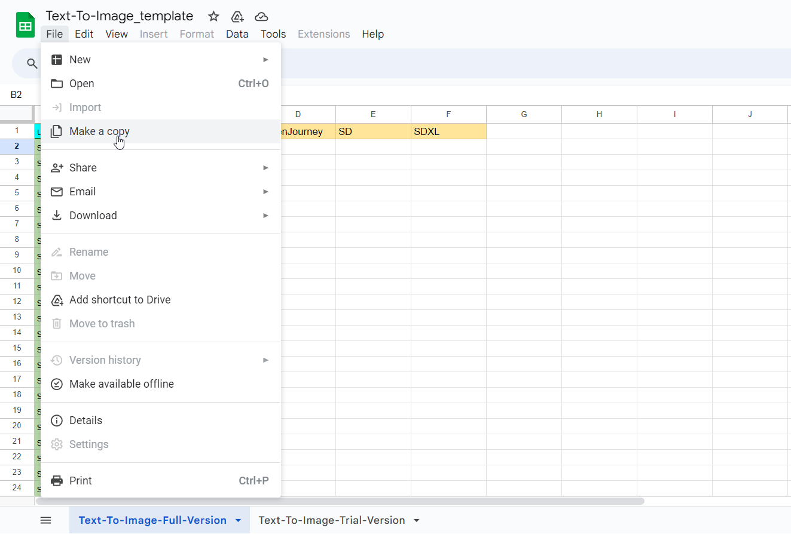
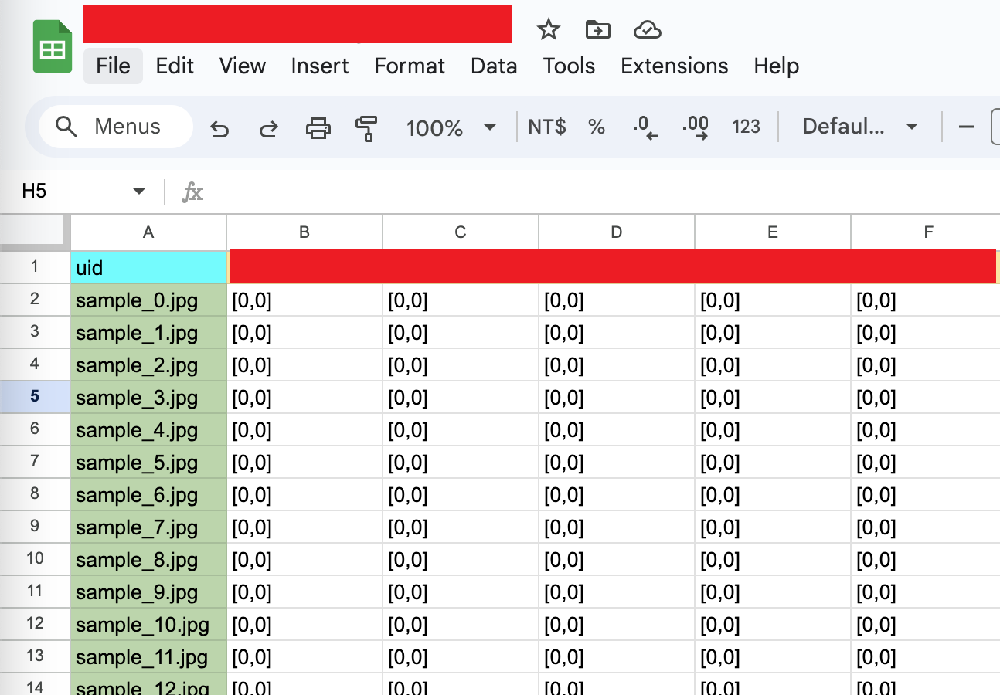
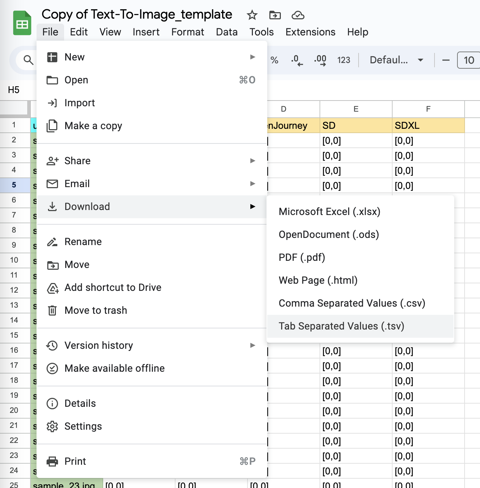

Introduction
Hello Rater! Thank you for participating our Rating AI-Generated Image Quality Task: Text-Guided Image Editing branch.
Rating Instruction
To standardize the conduction of a rigorous human evaluation, we stipulate the criteria for each measurement as follows:
- Semantic Consistency (SC), score in range
[0, 0.5, 1] - Perceptual Realism (PR), score in range
[0, 0.5, 1]
Semantic Consistency (SC) ensures that the generated image is coherent in terms of guidance provided (i.e. Prompts, Subject Token, etc.). In another words, the image has to be aligned with the requirements provided in user's inputs.
Perceptual Realism (PR) ensures the generated image align with real-world characteristics. In another words, the image has to be visually convincing and closely resembles a real photograph (Photorealism).
General Rules for Semantic Consistency (SC) scoring:
- SC=0 : Image not following one or more of the conditions at all (e.g. not following the prompt at all, different background in editing task, wrong subject in subject-driven task etc)
- SC=0.5 : all the conditions are partly following the requirements.
- SC=1 : All the conditions are following >75% of the requirement. You agree that the overall idea is correct.
General Rules for Perceptual Realism (PR) scoring:
- PR=0: Obvious distortion/artifacts that are unrecognizable at first glance
- PR=0.5: Some artifacts but the objects are still recognizable; or Unnatural sense of detail feeling in some area (You find out the image looks strange after examining it carefully.)
- PR=1: You agree that the image generally look real (doesn't have to be 100% perfect. Like 90% is good enough.)
Please be sure follow the Detail explanation tables when labelling.
Detail explanation of SC scoring.
In image generations, we provide user input (conditions) to guide the image. The conditions can be different according to the task.

This is how we decide the SC score to judge whether the conditions are fulfilling the requirement:
| Condition 1 | Condition 2 (if applicable) | Condition 3 (if applicable) | SC rating |
|---|---|---|---|
| no following at all | Any | Any | 0 |
| Any | no following at all | Any | 0 |
| Any | Any | no following at all | 0 |
| following some part | following some or most part | following some or most part | 0.5 |
| following some or most part | following some part | following some or most part | 0.5 |
| following some part or more | following some or most part | following some part | 0.5 |
| following most part | following most part | following most part | 1 |
Detail explanation of PR scoring.
This is how we decide the PR score to judge whether the image looks real:
| Objects in image | Artifacts | Unusual sense | PR rating |
|---|---|---|---|
| Unrecognizable | serious | Any | 0 |
| Recognizable | some | Any | 0.5 |
| Recognizable | Any | some | 0.5 |
| Recognizable | none | little or None | 1 |
- Artifacts can be:
- Distortion, watermark, scratches, blurred faces, unusual body parts. subjects not harmonized.
- Unusual sense can be:
- wrong sense of distance (subject too big or too small compared to others), wrong shadow, wrong lighting, etc.
Examples:
prompt means the image description.
Case: Output image looks nearly identical to the input image.
"source_global_caption": "An empty kitchen filled with dishes and appliances, with a game show on TV.",
"instruction": "let there be granite floor in the kitchen",
"target_global_caption": "An empty kitchen with granite floors filled with dishes and appliances, with a game show on TV."


- Basically, we gives SC=0 for cases like this. The PR score would vary according to the realism of the image (are there anything that looks unnatural?)
- If the Output image is exactly identical to the input image, we would rate the score
[0, 1](we assume the input image is a realistic photo.). - In this given example, there are some unnatural spot but its only little. spots.
Case: Output image is following the prompt well, but causing unnecessary edits.
"source_global_caption": "An empty kitchen filled with dishes and appliances, with a game show on TV.",
"instruction": "let there be granite floor in the kitchen",
"target_global_caption": "An empty kitchen with granite floors filled with dishes and appliances, with a game show on TV."

Btw this is how a granite floor look like:


- It seems the output image is following the prompt and the floor does look like a granite floor. However, the pattern also applied on other areas which makes the kitchen looks dirty.
- The image also look nearly identical to the input image, so PR=1.
- In this given example, I would rate the score
[1, 1].
Case: Output image is following the prompt well, but the background completely changed.
"source_global_caption": "some fruits are sitting on a table in bowls.",
"instruction": "remove middle fruit and put a cat in place",
"target_global_caption": "A cat sits on a table surrounded by bowls of fruit."


- For Editing tasks, no matter how the image following the prompt well, we give SC=0 as long as the result is in a complete different background. (Because it failed the condition)
- The PR score would vary according to the realism of the image. (are there anything that looks unnatural?)
- In this given example, I would rate the score
[0, 0.5]. The image looks real at first glance but there are some distortion in the body and on the fruits / background.
How do we define unnecessary edits and complete different background?
"source_global_caption": "An empty kitchen with granite floors filled with dishes and appliances, with a game show on TV.", "instruction": "let the cabinets be made of dark wood", "target_global_caption": "An empty kitchen with dark wood cabinets and granite floors filled with dishes and appliances, with a game show on TV."
Input | Unnecessary/Bad Edit | Complete different background


Case: Output images are following the prompt (how well and how real are they?)
"source_global_caption": "A skateboarder is doing a trick on a hand rail.",
"instruction": "What if the man had a hat?",
"target_global_caption": "A skateboarder with a hat is doing a trick on a hand rail."
Input | OutputA | OutputB | OutputC | OutputD | OutputE


- This is how I would rate them:
- OutputA:
[1, 1]. The hat suits well thus SC=1. PR=1 despite there is minor facial distortion on the man but its hard to notice. - OutputB:
[1, 1]. The hat suits well, but there is unnecessary edits on his hand, but its minor. SC=1. PR=1 because there is minor distortion on the man face. - OutputC:
[1, 0.5]. The hat exists but does not suit well, but its still following the prompt. thus SC=1. PR=0.5 because the unsual sense. - OutputD:
[0.5, 1]. The hat suits well, but the background color doesn't match thus SC=0.5. PR=1 as the image look quite real with no distortion. - OutputE:
[0, 0.5]. SC=0 because the background completely changed. And PR=0.5 because unusual body parts.
Perfect Cases: The Editing following the prompt perfectly and look very real
"source_global_caption": "A bull is on a farm walking around a pen.",
"instruction": "Have the cow wear a hat.",
"target_global_caption": "A stylish cow wearing a hat walks around a pen on a farm."


- In this given example, I would rate the score
[1, 1]. The hat gives a nice specular reflection.
How to complete the task
Before you start working on the task, please be sure that you already reigistered with us on Prolific.
Please be sure follow the Detail explanation tables when labelling.
We will examine the statistic to reject poor submissions. Please follow the guideline strictly.
First open the visualization link in a new page: https://chromaica.github.io/ImagenHub/ImagenHub_Text-Guided_IE

The website might freeze for a while due to high amount of images.
Then go to the googlesheet https://docs.google.com/spreadsheets/d/1ESJwuJL-ohZTxS5t3Q1acDHXDgVDNzYEie9mIgvIsek/edit?usp=sharing and make a copy to your own google account

After copying the googlesheet to your drive, you should be able to edit the file safely.
Start filling the image score in [SC,PR] format for images that align the uid in the visualization link.
The filling should look like something like this: each image is rated with [SC, PR] score.

Please double check the dot (.) and comma (,) Submission with too many mistakes will be rejected.
How to submit
Once the labelling is done, please download the current sheet as .tsv file.

Finally, attach the tsv file through emailing to m3ku@uwaterloo.ca
Please list the email title as
[Prolific] AI-Generated Image Rating
For the content of the email, please follow this template:
Hi,
I am a participant of the Rating AI-Generated Image Quality Task: Text-Guided_IE branch.
My ID:
Best,
Then message us on Prolific saying that you have finished the task. Send us your ID so we can align with your email.
You should get a response within 24 hours if the format is right. And the payment will sent through Prolific within 12 hours once you get the email reply.